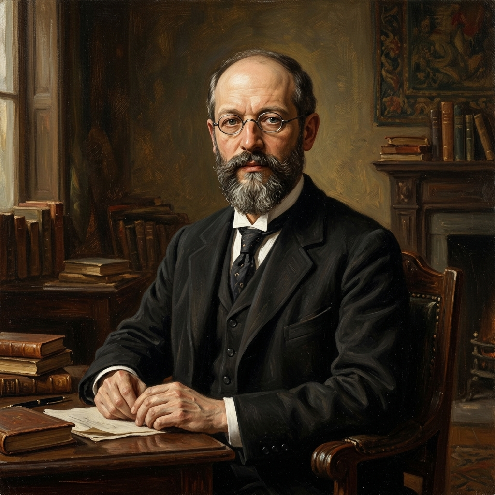

Funkcija 1
„Plaćam kartom.”
Sredstvo razmjene. Ne moraš naći nekoga tko ima ono što trebaš i istodobno treba ono što ti imaš. Dovoljno je da oboje prihvaćate novac.
Lekcija 06
Novčanica od 50 eura je komad papira koji vrijedi gotovo ništa. Ipak, za nju ćeš raditi cijeli dan. Zašto? Ekonomija kaže da je novac sredstvo plaćanja. Sociologija dodaje: novac je odnos među ljudima, i to jedan od najmoćnijih koje smo ikad izmislili.
Osnovni pojmovi
Ekonomisti novcu pripisuju tri funkcije. Sociologe zanima nešto drugo: zašto uopće vjerujemo da novac vrijedi.
Funkcija 1
„Plaćam kartom.”
Sredstvo razmjene. Ne moraš naći nekoga tko ima ono što trebaš i istodobno treba ono što ti imaš. Dovoljno je da oboje prihvaćate novac.
Funkcija 2
„Koliko to košta?”
Mjera vrijednosti. Kruh, koncert i sat instrukcija postaju usporedivi jer se svi izražavaju istom jedinicom.
Funkcija 3
„Štedim za ljeto.”
Sredstvo čuvanja vrijednosti. Kruh se pokvari za tri dana, a novac možeš ostaviti za sljedeću godinu.
Na otoku Yap u Tihom oceanu kao novac su se koristili golemi kameni koluti, rai, neki teži od automobila. Nisu se micali: svi su jednostavno znali čiji je koji. Jedan je kamen tijekom prijevoza pao u more i potonuo. Obitelj koja ga je posjedovala ostala je bogata, jer su svi na otoku i dalje priznavali da kamen postoji i da je njihov.
Novac ne mora biti ni vidljiv. Mora samo postojati dogovor.
Prvog siječnja 2023. Hrvatska je uvela euro. Novčanica od 200 kuna nije se promijenila ni za milimetar, ali se nakon razdoblja zamjene više nije mogla potrošiti u trgovini. Isto se dogodilo i s dolarom kad je 1971. prestao biti zamjenjiv za zlato: od tada novac vrijedi samo zato što država jamči, a mi vjerujemo.
Vrijednost nije u papiru, nego u odnosu među ljudima.
Sociološki zaključak: novac je sustav društvenog povjerenja. Vrijedi dok svi zajedno vjerujemo da vrijedi. Kad to povjerenje pukne, kao u hiperinflaciji, novac se pretvara u ono što fizički jest: papir.
Klasik
Njemački sociolog Georg Simmel napisao je 1900. prvu veliku knjigu o tome što novac čini ljudima, a ne tržištu. Odgovor mu je bio dvostruk: novac nas oslobađa i istodobno hladi.

Seljak koji je gospodaru plaćao u žitu i radu bio je vezan uz zemlju i uz osobu. Kad davanje postane novčano, odnos postaje bezličan: platiš i slobodan si. Novac ti omogućuje da radiš za bilo koga, kupiš od bilo koga i živiš gdje želiš.
Ista bezličnost hladi odnose. Kvaliteta se svodi na kvantitetu: pitamo „koliko?” umjesto „kakvo?”. Simmel u velegradu vidi blaziranost: ravnodušnost čovjeka kojem je sve jednako vrijedno, jer sve ima cijenu. Novac je, piše, strašni izjednačivač.
Veza s 1. lekcijom. Simmelova slika vrlo je bliska Weberovoj racionalizaciji i Durkheimovoj organskoj solidarnosti: moderno društvo povezuje milijune neznanaca koji ovise jedni o drugima, a da se ne poznaju. Novac je ono što takvu povezanost čini mogućom.
Teorijski pristupi
Isti novac, tri različita pitanja. Ovo su iste tri perspektive kao u 1. lekciji.
Funkcionalizam · makro
„Novac je ljepilo složenog društva.”
Bez novca nema razvijene podjele rada: liječnik ne bi mogao plaćati pekaru operacijama. Novac omogućuje suradnju milijuna ljudi koji se nikad neće sresti.
Pita: kako novac pridonosi stabilnosti i funkcioniranju cjeline?
Konfliktna teorija · makro
„Novac je moć.”
Novac nije neutralan. Tko ga ima, njime kupuje i utjecaj, bolje obrazovanje, zdravlje i slobodno vrijeme. Novac se gomila kod onih koji ga već imaju, pa se nejednakost prenosi s generacije na generaciju.
Pita: tko ima novac, tko ga nema i kako se ta razlika održava?
Interakcionizam · mikro
„Novac je simbol.”
Ista novčanica znači različito u različitim situacijama. Plaćen ručak i ručak koji te prijatelj „časti” nisu ista interakcija. Trošenjem gradimo i pokazujemo identitet.
Pita: koje značenje ljudi pridaju novcu u svakodnevnim situacijama?
I Weber ima nešto reći. U djelu Protestantska etika i duh kapitalizma (1905.) tvrdi da je zarađivanje novca postalo moralna dužnost, „poziv”, pod utjecajem protestantske religioznosti. Bogatstvo se nije smjelo rasipati nego ponovno ulagati. Tako je religija, prema Weberu, nenamjerno pomogla rađanju kapitalizma.
Primijeni
Za svaki primjer odaberi pojam iz lekcije koji ga najbolje objašnjava.
Video analiza
Pogledaj video, a zatim usmeno ili pismeno odgovori na tri pitanja ispod njega.
 Gledaj video na YouTubeu
Otvara se u novoj kartici. Vlasnik videa ne dopušta prikaz na drugim stranicama.
Gledaj video na YouTubeu
Otvara se u novoj kartici. Vlasnik videa ne dopušta prikaz na drugim stranicama.
Što misliš da je najbitnija spoznaja o novcu koju si saznao/saznala iz videa?
Kojoj sociološkoj perspektivi pripada pristup koji zauzima ovaj video i zašto?
Misliš li da novac zaslužuje i opravdava vrijednost koju ima u našim životima? Objasni odgovor.
Novac i položaj
Dvoje ljudi može imati jednako novca, a ipak ne stajati na istom mjestu u društvu. Francuski sociolog Pierre Bourdieu objasnio je zašto.
„Distinkcija”, 1979.
Novac nije jedini kapital.
Veza s 3. lekcijom: Pareto je pokazao da mala manjina posjeduje velik dio bogatstva. Bourdieu pokazuje kako se ta prednost održava: ne samo novcem, nego i znanjem, ukusom i vezama koje se prenose s generacije na generaciju.
Komodifikacija
Komodifikacija je proces u kojem nešto što prije nije imalo cijenu postaje roba za prodaju: voda, zdravlje, obrazovanje, pažnja, pa i prijateljstvo. Filozof Michael Sandel (2012.) upozorava da novac ne mijenja samo tko nešto dobiva, nego i što to jest.
Sandelova dva prigovora. Prvi je nepravednost: kad se nešto važno prodaje, dobivaju ga oni koji imaju novca, a ne oni kojima najviše treba. Drugi je kvarenje: neke stvari cijena mijenja iznutra. Kupljeno prijateljstvo nije prijateljstvo. Dijete plaćeno da čita možda čita više, ali uči da je čitanje posao, a ne užitak.
Nema točnih odgovora. Klikni i pročitaj sociološki komentar.
„Novac je najuniverzalniji i najučinkovitiji sustav uzajamnog povjerenja ikad osmišljen.”
Za ponavljanje
Provjeri se
Bez ocjene i bez pritiska. Pitanja su u stilu državne mature.
—